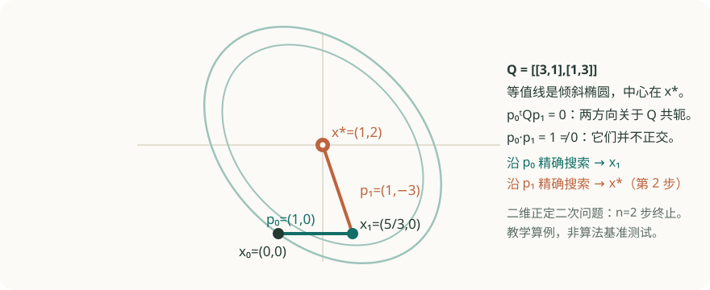

5.1.1 共轭方向法：把 n 维二次问题拆成 n 个一维搜索
对对称正定二次目标，只要搜索方向两两关于 Q 共轭，沿每个方向精确搜索一次，就能在第 n 步抵达精确解。这把一个 n 维问题归约成 n 个可独立求解的一维问题，也是共轭梯度法的理论起点。
正定二次目标与线性方程组
考虑二次目标 φ(x)=½xᵀQx−bᵀx，其中 Q 是对称正定矩阵（SPD），b 给定。Q 正定保证 φ 严格凸，且当 Qx=b 时 φ 取到唯一最小值。梯度是 ∇φ(x)=Qx−b，令梯度为零即得线性方程组 Qx=b。
因此"极小化正定二次函数"和"解对称正定线性方程组"是同一个问题。最优值可以写成 φ(x*)=−½bᵀQ⁻¹b，它只依赖 Q 与 b。
关于 Q 共轭的方向
设 p₀,…,p_{n−1} 为非零向量。若对所有 i≠j 都有 pᵢᵀQpⱼ=0，就称这组方向关于 Q 共轭（也称 Q-正交）。把欧氏内积 ⟨u,v⟩=uᵀv 换成 Q-内积 ⟨u,v⟩_Q=uᵀQv，共轭就是这组新内积下的正交性；当 Q=I 时它退化为普通正交。
当 Q 正定时，Q-内积是真正的内积，因此一组两两共轭的非零方向必线性无关，恰好构成 Rⁿ 的一组基。下面的定理正是利用这一点。
精确搜索下 n 步终止
定理（Nocedal & Wright, Theorem 5.1）。设 Q 对称正定，p₀,…,p_{n−1} 关于 Q 共轭。从任意起点 x₀ 出发，沿这些方向依次做精确线搜索，则第 n 步的迭代点就是唯一解 x*。
推导骨架如下。因为共轭方向构成 Rⁿ 的基，唯一解可写为 x*=x₀+Σₖ αₖpₖ。用 pₖᵀQ 左乘并利用共轭性，交叉项全部消失，得到整段步长 αₖ=pₖᵀQ(x*−x₀)/(pₖᵀQpₖ)。另一方面，第 k 步在射线 xₖ+tpₖ 上最小化 φ 得到的最优步长是 αₖ=−gₖᵀpₖ/(pₖᵀQpₖ)。两者相等，于是每一步的贪心精确搜索恰好恢复整段展开的系数。
等价的说法是：第 k 步之后梯度 gₖ 与 p₀,…,p_{k−1} 全部正交，而第 n 个梯度 gₙ 与所有基方向正交，因此只能是零向量，即 xₙ=x*。
误差向量 x*−x₀ 沿共轭基分解为 α₀p₀+α₁p₁。第 k 次精确搜索逐项消去一个分量，因此 n 个方向后误差归零——这是 Theorem 5.1 的几何读法。
二维可复现算例
取 Q=[[3,1],[1,3]]、b=(5,7)，则 x*=Q⁻¹b=(1,2)。起点 x₀=(0,0)，初始梯度 g₀=Qx₀−b=(−5,−7)。
选 p₀=(1,0)：p₀ᵀQp₀=3，g₀ᵀp₀=−5，故 α₀=5/3，x₁=x₀+α₀p₀=(5/3,0)。再取 p₁=(1,−3)：检查 p₁ᵀQp₀=(1,−3)ᵀ(3,1)=3−3=0，确实与 p₀ 关于 Q 共轭；注意 p₀·p₁=1≠0，它们并不正交。此时 g₁=Qx₁−b=(0,−16/3)，p₁ᵀQp₁=24，g₁ᵀp₁=16，所以 α₁=−2/3，x₂=x₁+α₁p₁=(1,2)=x*。两步结束。
作为对照，若误用 p₁=(0,1)，则 p₁ᵀQp₀=(0,1)ᵀ(3,1)=1≠0，共轭性不成立，两步不会恰好落在 x*。这正是定理假设不可省略的体现。

这是共轭梯度法的起点，也是它的边界
共轭方向法要求方向提前给定；定理 5.1 依赖 Q 正定、方向精确共轭以及沿射线精确线搜索。共轭梯度法要解决的正是这个前提：它不预先构造共轭方向，而是在迭代中利用梯度信息自动生成一组共轭方向，从而在正定二次问题上仍然 n 步终止，且无需显式构造或存储全部方向。
对一般非线性函数，不存在固定的 Q，也就没有全局的“n 步终止”。那时需要 5.2 节的重启策略与全局收敛分析。本页的程序只处理一个固定的二维正定二次问题，用来核对精确步长与终止结论；它不是通用求解器，也不覆盖舍入误差、病态条件数或大规模情形。
交互：改变第二个方向的斜率
固定 p₀=(1,0)，把第二个方向取为 p₁=(1,t)，拖动滑块改变 t。观察什么时候两步迭代恰好落到 x*=(1,2)：这恰好发生在共轭条件 p₁ᵀQp₀=3+t=0，即 t=−3 时。
实时模型计算
Python：精确步长与断言交叉验证
下面的程序只依赖标准库。它先验证 p₀ 与 p₁ 关于 Q 共轭但彼此不正交，然后依次做两次精确线搜索，断言第二步结果与理论步长 α₀=5/3、α₁=−2/3 完全一致。
"""Conjugate direction method on a 2x2 positive definite quadratic."""
from math import sqrt
Q = ((3.0, 1.0), (1.0, 3.0))
b = (5.0, 7.0)
def matvec(M, v):
return (M[0][0]*v[0] + M[0][1]*v[1], M[1][0]*v[0] + M[1][1]*v[1])
def dot(u, v):
return u[0]*v[0] + u[1]*v[1]
def gradient(x):
qx = matvec(Q, x)
return (qx[0] - b[0], qx[1] - b[1])
def exact_step(x, p):
return -dot(gradient(x), p) / dot(p, matvec(Q, p))
def run(x0, directions):
x = x0
alphas = []
for p in directions:
a = exact_step(x, p)
alphas.append(a)
x = (x[0] + a*p[0], x[1] + a*p[1])
return x, alphas
if __name__ == "__main__":
p0, p1 = (1.0, 0.0), (1.0, -3.0)
assert abs(dot(p0, matvec(Q, p1))) < 1e-12
assert abs(dot(p0, p1) - 1.0) < 1e-12
x_star, alphas = run((0.0, 0.0), (p0, p1))
assert sqrt((x_star[0]-1.0)**2 + (x_star[1]-2.0)**2) < 1e-12
assert abs(alphas[0] - 5/3) < 1e-12
assert abs(alphas[1] + 2/3) < 1e-12
print("x* =", x_star, "alpha =", [round(a, 6) for a in alphas])